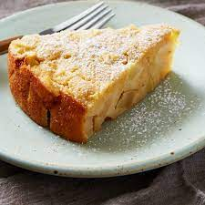

Apple Pie Recipe

Description:
Russian apple cake or "Sharlotka" as the locals would say is a light spongy apple cake.
It is very easy to make and very inexpensive
Ingredients
- 1/2 TBS of butter
- 3 Apples
- 1 lemon juiced
- 1 tsp Cinnamon
- 1 1/4 cup flour
- 1 1/2 tsp baking powder
- 4 eggs
- Pinch of salt
- 1 cup of sugar
- 1/4 cup of sour cream
- 1 tsp of vanilla extract
Directions:
- Cover the baking panwith parchment paper
- Melt the butter in the pan or using non stick spray.
- Cut 2 apples into small add lemon juice and cinnamon
- In a different bowl mix baking powder and flour, set aside
- Pre heat oven to 350 F
- Add eggs and salt, add 1/4 cup of sugar, mix together, keep adding sugar till all togther
- Add the vanilla and the sour cream,mix together
- Pour batter over the apples
- Place pan wit batter in oven for 60 min
- Once finished let cool before serving